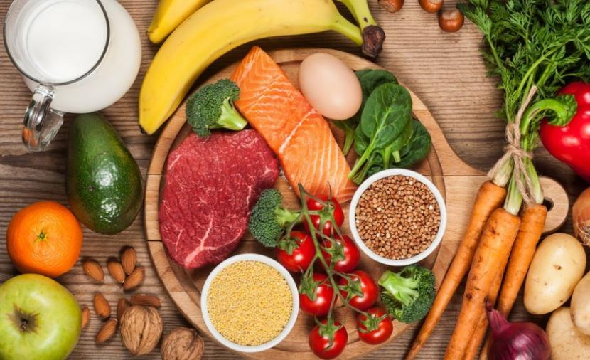
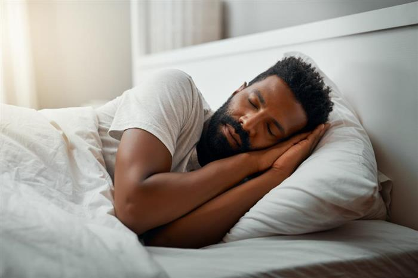

- مارس الرياضة او اي نشاط تحبه
- قم بتنظيم وجبات صحية متوازنة
- حاول ان تنام فترات متساوية ومتواظبة
- تحدث مع صديق مقرب لك ليخفف لك التوتر
.يمكن لأي شكل تقريبًا من أشكال الأنشطة البدنية تخفيف التوتر. حتى إذا لم تكن رياضيًّا.يمكن أن تكون ممارسة التمارين الرياضية وسيلةً جيدة لتخفيف التوتر
.حيث يمكن أن تحفز الأنشطة البدنية إفراز الإندورفينات التي تجعلكَ تشعُر بتحسن المزاج، وكذلك المواد الكيميائية العصبية الطبيعية التي تعزِّز من الإحساس بالراحة النفسية
.حاول التركيز على حركات جسمك وانت تجري التمارين الرياضية الذي من سيقلل التوتر

.ان اتباع نظام غذائي صحي ومتوازن هو أمر مهم للغاية لذلك إحرص على تناول الأكل الصحي وعدم الإفراط في الأكل بدون سبب
!يمكنك استشارة متخصص ليساعدك اذا لم تستطع تنظيم نظام صحي لنفسك

.إن النوم ضروري لصحة الدماغ وهو يساعد أيضا في تخفيف التوتر فيجب أن تكون مدة نومك على الأقل 7 ساعات متواصلة
.النوم المتوازن الصحي ليس بالكثير ولا بالقليل فقط بالاعتدال هذا يعني ان
النوم لايزيد عن 9 ساعات ولا يقل عن 7 ساعات
.هذا سيساعدك على تحفيز هرمون الدوبامين
المسؤول عن السعادة والراحة النفسية
